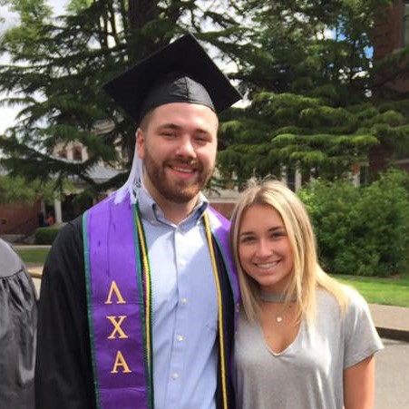
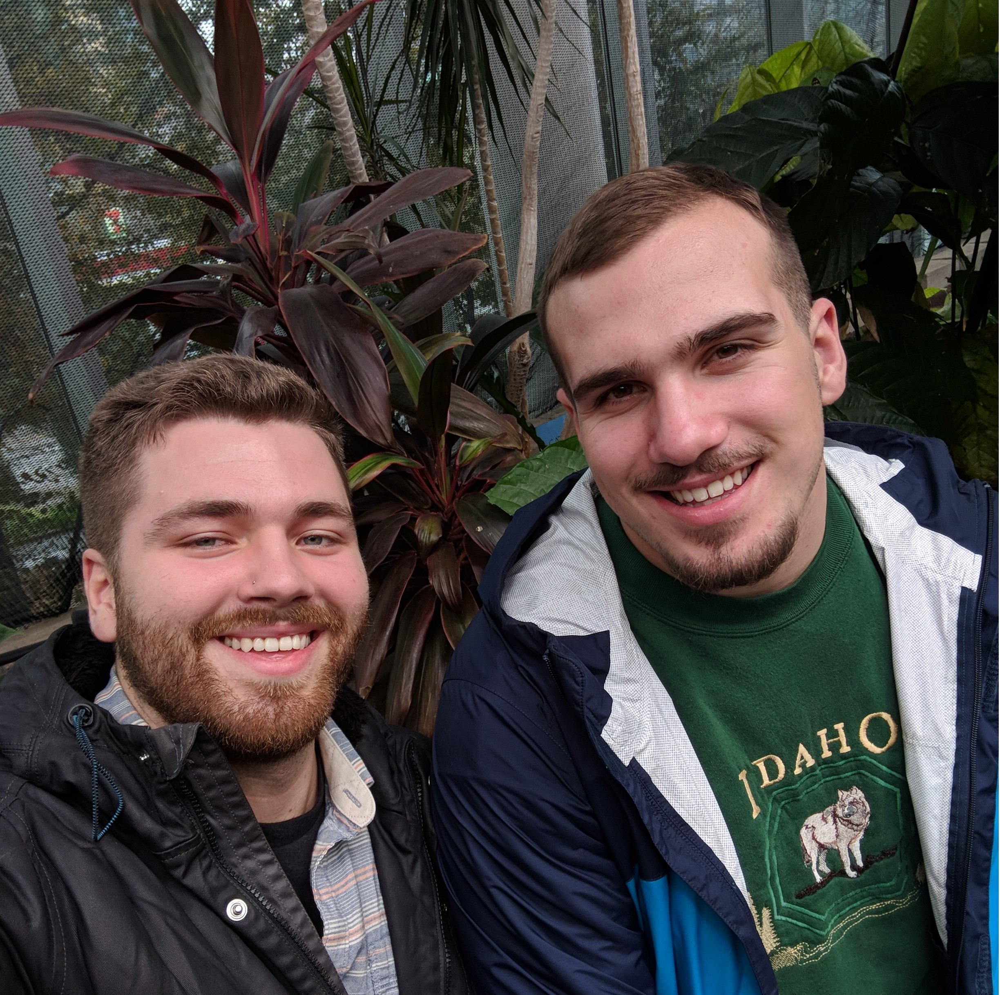

Nate Cottle's Portfolio
a programming portfolio
Projects
Wiki Remake

For this project, I recreated the home page of Wikipedia using HTML, CSS, and Bootstrap elements.
Puppy Search

For this project, I created an animal shelter webpage using HTML and CSS. We included a small navigation bar near the top and created profiles for each dog available for adoption.
Beatles Band Page
About Me
My Background
I got my education at...
- Epicodus (in progress)
- Oregon State University
- Lake Oswego High School
I got my work experience at...
- Oregon State University, Memorial Union : Event Coordinator
- All University Sing : Event Production Chair
- Lambda Chi Alpha Fraternity : VP of Philantrhopy
My Interests and Hobbies
Netflix

I think that Netflix is amazing. Here are some of my favorite shows.
- Arrested Development
- BoJack Horseman
- Chef's Table
- The Great British Baking Show
Reading
I try to read as often as I can. My favorite series growing up was Harry Potter, but the Pendragon series was a close second. I'm currently reading through most of the book series I read in high school.
Adventures
I love going on trips with friends. Wether is the beach or the city, we always find something fun to do.
Video Games

I find that playing video games is a good way to relax, here are a few of my favorites:
- Breath of the Wild
- Destiny 2
- Dark Souls Trilogy
- Mass Effect Trilogy